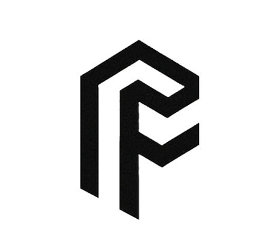

Impossible FibersImpossible Fibers turns proteins into advanced materials, using manufacturing methods we learn from how animals make fibers. We are building protein-fiber sensors that give robots a sense of touch.
In a project funded by ARIA, we are developing a way to template hollow-core glass fibers for telecommunications, starting from waste casein.
For DARPA, we built a model that predicts collagen fiber properties from molecular structure. It worked for collagen, and showed that a general model for protein fibers needs far more data on how fibers are processed, across many more proteins. Our high-throughput dope machine is designed to collect that data.